ForgePix turns a focus series into a clean, sharp macro photo — automatically, on your own computer, with no account.
Drop your photos in and press one button: it removes the bad shots, lines the rest up and builds one sharp image. Free and open source.
Also includes tools for astro stacking, Moon mosaics and long‑exposure effects.
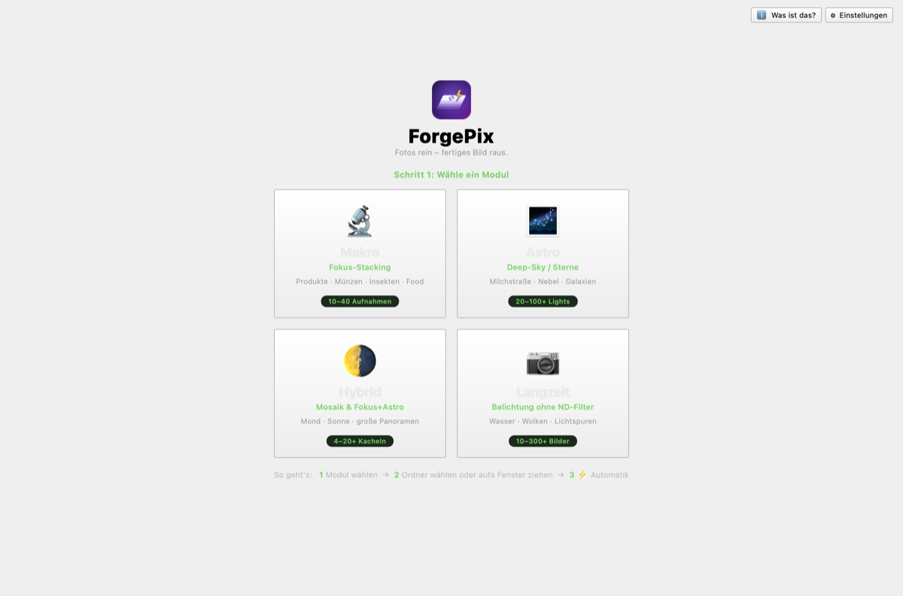
What ForgePix does for you
You take the photos — ForgePix turns them into one clean, sharp result. In plain words:
Lots of photos that are each only sharp in places become one photo that’s sharp everywhere.
Shaky or useless photos are removed automatically — and it tells you why.
A simple helper works out how many photos you actually need. No guessing.
Turn a quick burst into smooth water or light trails — without an expensive filter.
Night‑sky shots and tiny‑detail shots — both in the same easy app.
Everything runs on your own machine. Nothing is uploaded. No account, no AI required.
How it works
Four simple steps — and you can see what happens at each one.
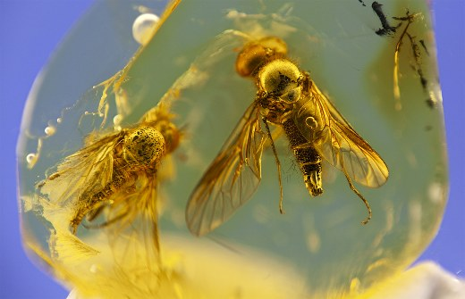
A few shots, each sharp only in places.
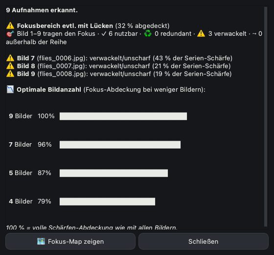
Bad photos removed, the rest lined up.
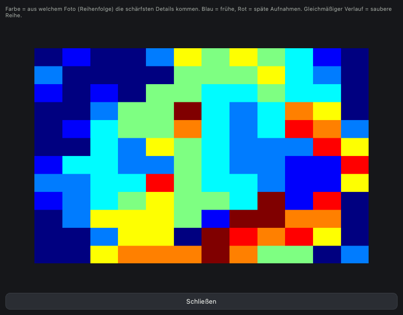
Takes the sharp part from each photo.
Sharp everywhere, ready to use.
Four tools in one app
Choose when you open the app — switch any time.
Razor‑sharp photos of small things — products, coins, food, jewellery, insects. ForgePix combines your shots so the whole subject is in focus.
Combine many star photos into one clean, bright night‑sky image with less noise. It even drops the photos spoiled by clouds or a passing satellite.
Stitch several shots of the Moon or Sun into one big, detailed picture — or combine frames for extra clarity.
Silky water, soft clouds or light trails — made from a normal burst of photos. No tripod tricks, no special filter needed.
A look inside
Clear buttons, a help “?” on every option, a simple Beginner mode, and a photo editor built right in.
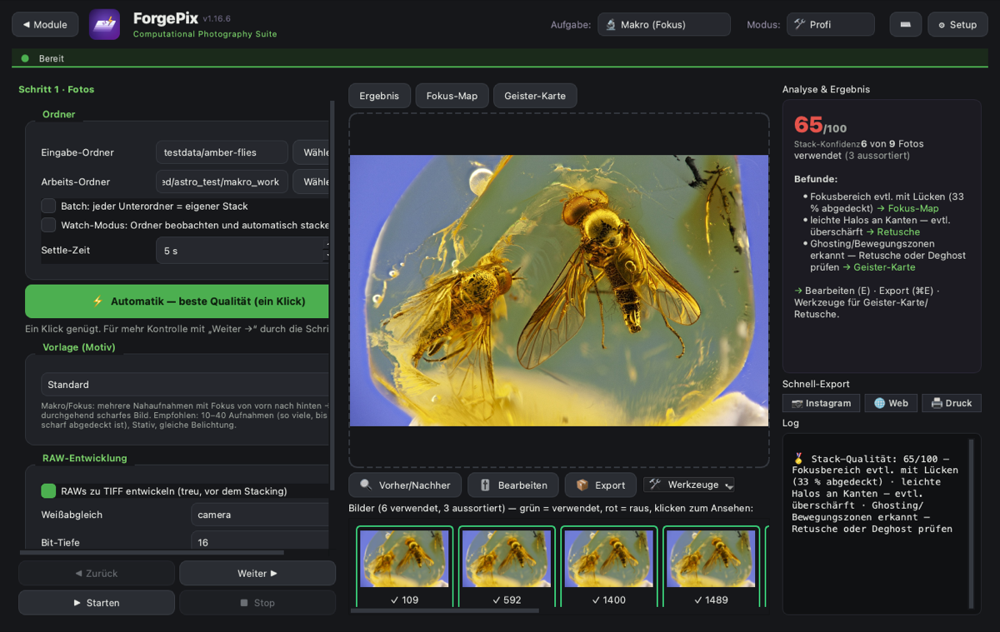
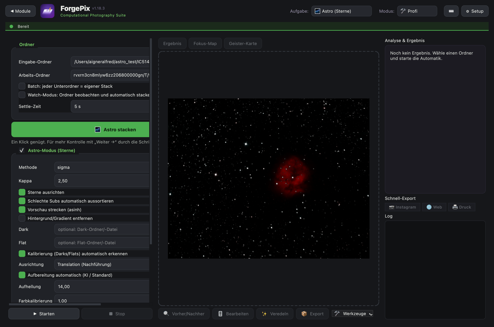
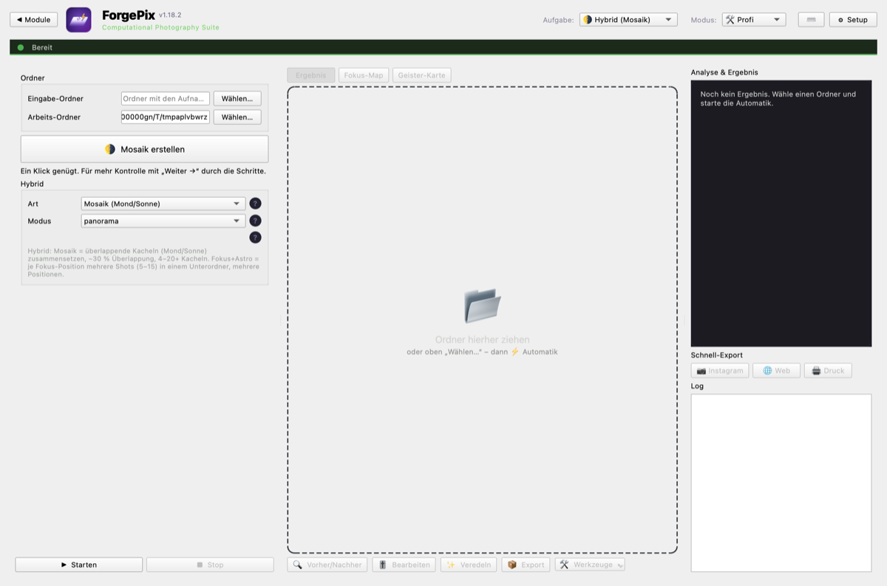
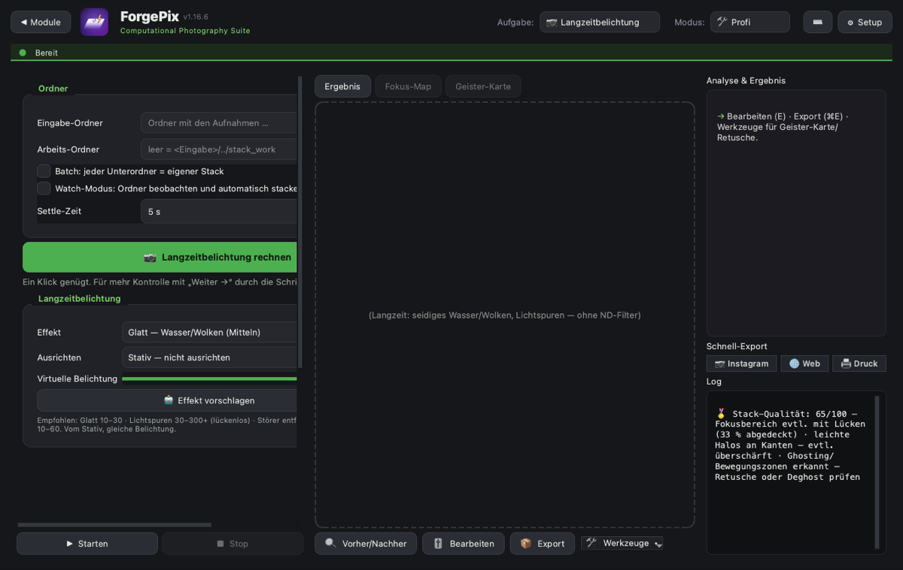

Real results
Actual photos stacked in ForgePix — straight from the app.
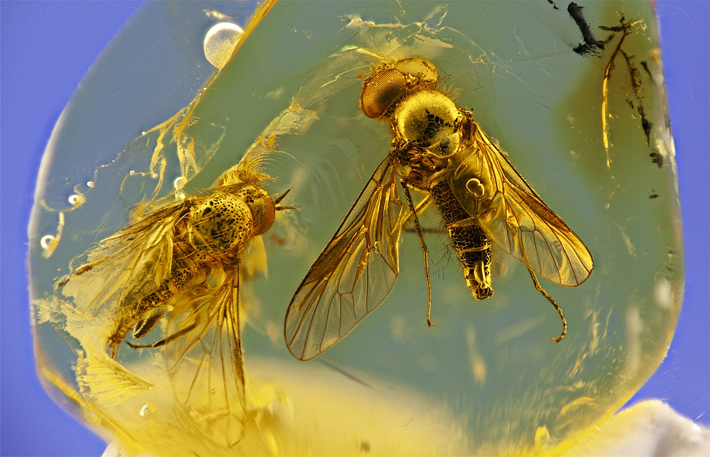
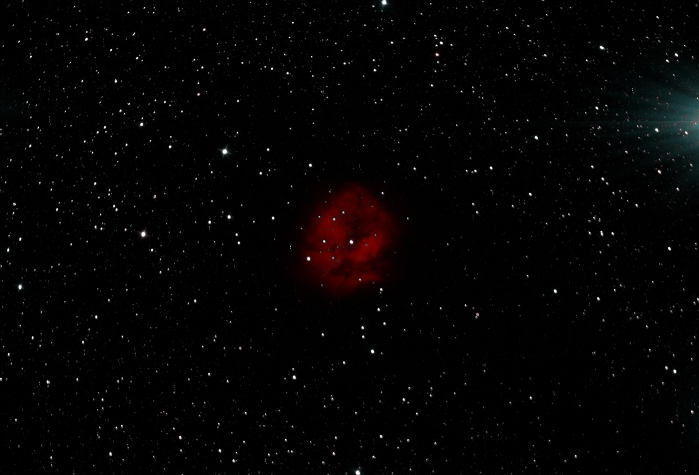


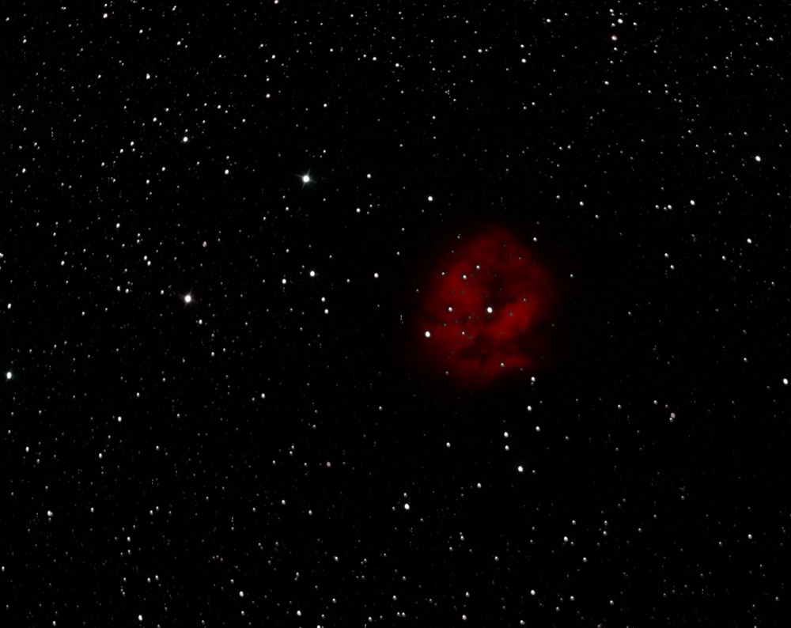
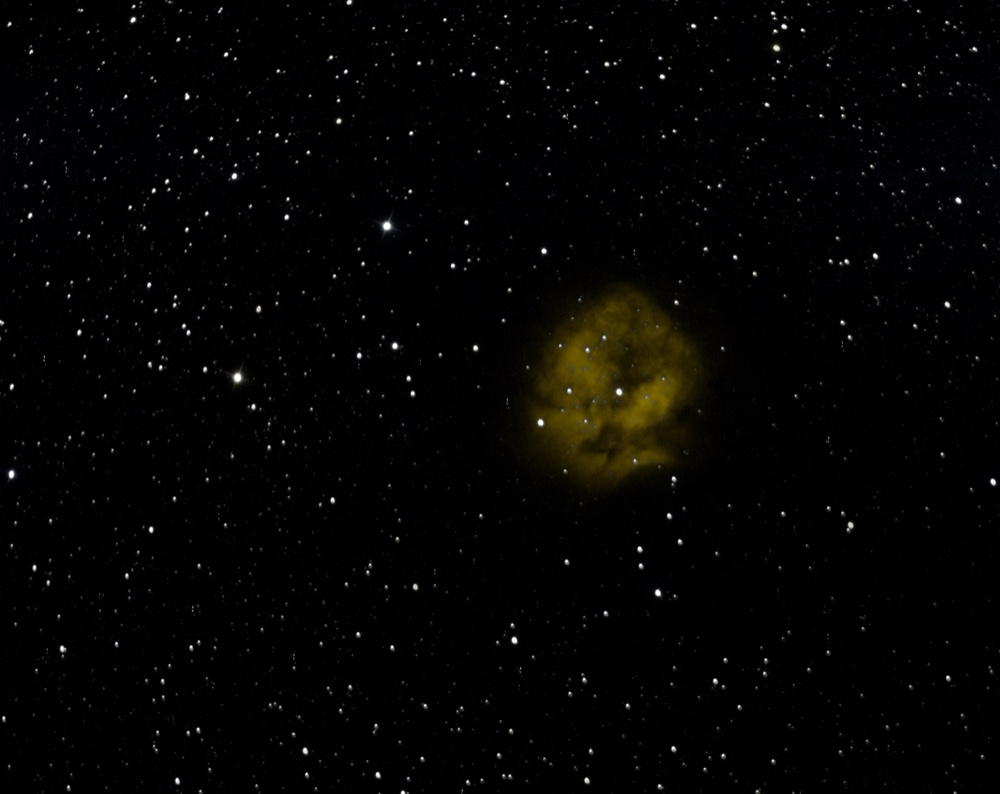
Switch the colour palette (HOO, SHO …) with one click — without re‑stacking.
What you get
ForgePix works completely offline. No account, no sign‑up, no internet, no AI needed — your photos never leave your computer.
If you like, you can connect an AI later — but only for tips and checks. It never touches your photos.
Get it
Always the latest version, straight from GitHub. Latest: checking…
 ForgePix
ForgePix